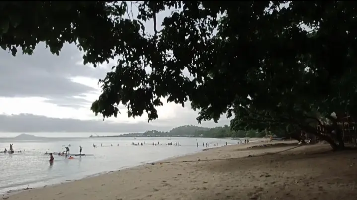
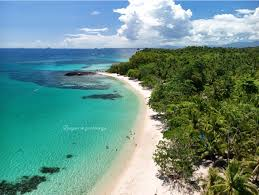
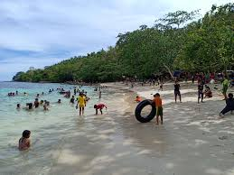

Overview
Beach tourism offers a relaxing and enjoyable experience for visitors who want to explore coastal areas, enjoy scenic views, and participate in water-based activities. It is one of the most popular types of tourism due to its combination of leisure and adventure.
Tourists can enjoy activities such as swimming, sunbathing, island hopping, and exploring marine life. Beach destinations also provide opportunities to experience local culture, cuisine, and traditions.
This type of tourism promotes relaxation while allowing visitors to appreciate the natural beauty of coastal environments.
Popular Beach Destinations
Buluan Freedom Beach

Buluan Freedom Beach is a quiet and relatively untouched beach located on Buluan Island, known for its fine white sand, clear blue waters, and peaceful atmosphere that makes it ideal for relaxation and escaping crowded tourist spots.
Unlike more commercialized beaches, this destination remains simple and natural, with minimal development and only basic facilities such as cottages, which allows visitors to fully enjoy the raw beauty of the environment and the calmness of the sea. The surrounding waters are also rich in marine life, making it a good spot for swimming and light snorkeling, especially for those who appreciate nature.
Tubo-Tubo Beach

Tubo-Tubo Beach is a local beach destination known for its simple, relaxing environment and natural coastal scenery, making it a good spot for casual outings and family gatherings.
The beach typically features a mix of light sand and clear seawater, suitable for swimming and enjoying the sea breeze, while the surrounding area provides a calm atmosphere that is less crowded compared to more famous tourist beaches. It is often visited by locals for picnics, short day trips, and bonding activities rather than large-scale tourism.
Linguisan Beach

Linguisan Beach refers to the coastal shoreline areas found around Linguisan, and while it can be enjoyed like a beach, it is not widely recognized as a major or developed beach destination.
The area usually has a mix of sandy and slightly rocky shores, with calm waters that locals may use for swimming, relaxing, or small gatherings; however, compared to more popular beaches, it remains simple and less commercialized. The surroundings often include fishing communities and natural coastal features, giving it a more rural and authentic atmosphere rather than a tourist-centered one.